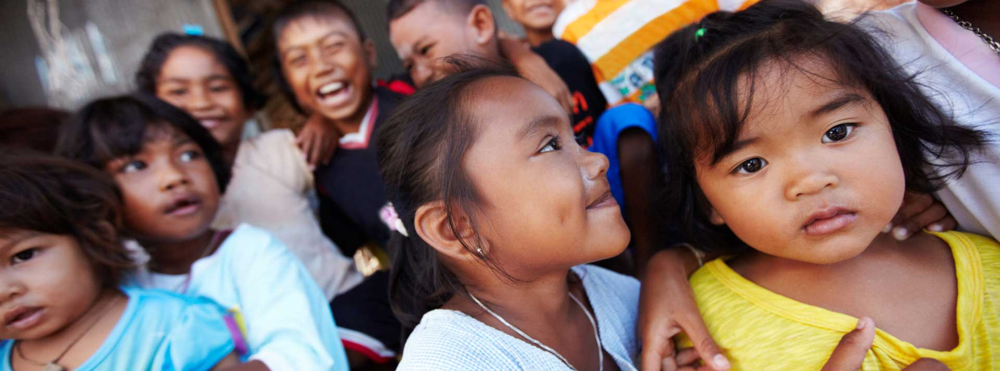
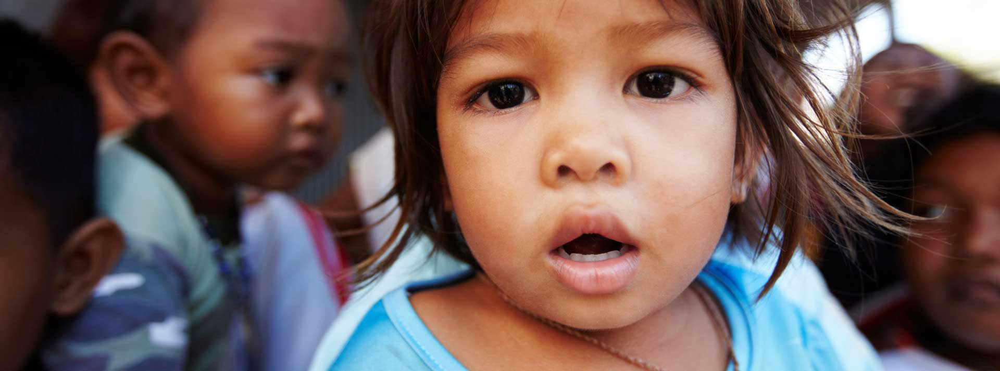

En
Fr
Tel.:+1 514 000 0000
Donate
Charitas
Foundation
Home
Causes
Human Services
Animals
International
Education
Projects
Active Projects
Implemented Projects
Events
Upcoming Events
Past Events
Press
Docs
Annual report
Books
Flyers
Newsletter
Gallery
School
Full width
Day Center
Staff
Management
Accounting
Volunteers
Pages
Shop
My Account
Checkout
Cart
Purchase me
About Us
Alerts
Submenu
404
Buttons
Page without sidebar
Contact
Purchase
Let's build something incredible
Help build a future for 12,000 schoolchildren. Become part of the Madagascar Schools Appeal.
Donate Now!
Our Work with refugees
Find out more about our work around the world providing crucial medical care to people fleeing their homes.
Donate

Donate and give clean water
Just $20 can provide a person with clean drinking water. 100% funds water projects for people in need.
Donate

Give water give life
$3 a month could help stop children dying from drinking dirty water
By this theme